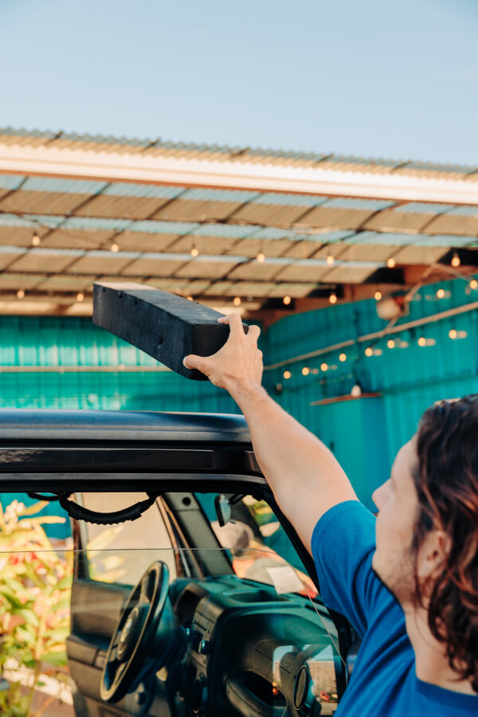
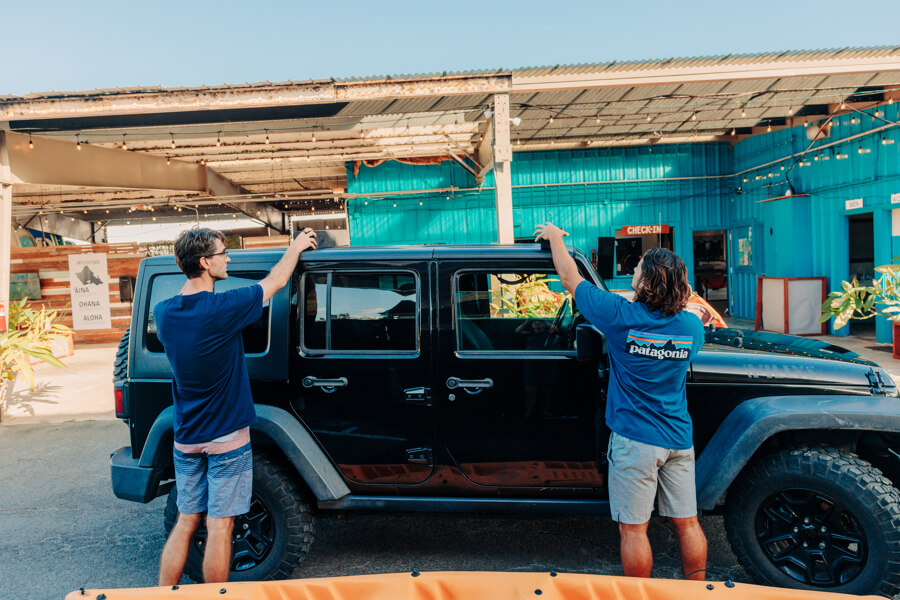
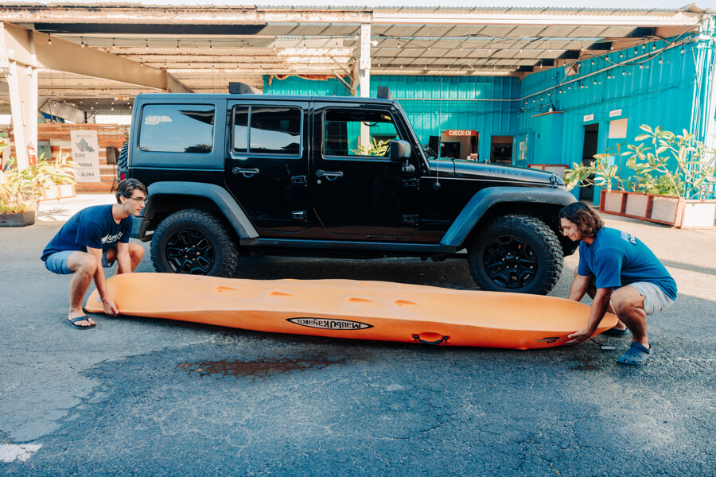
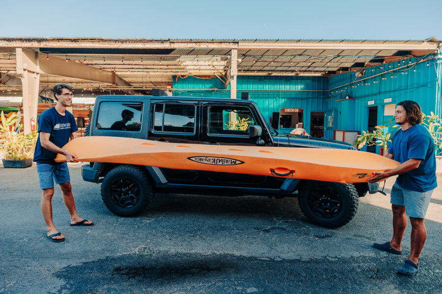
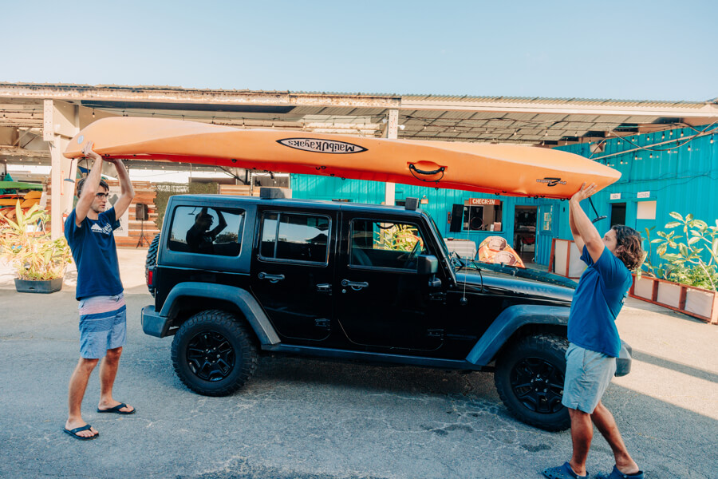
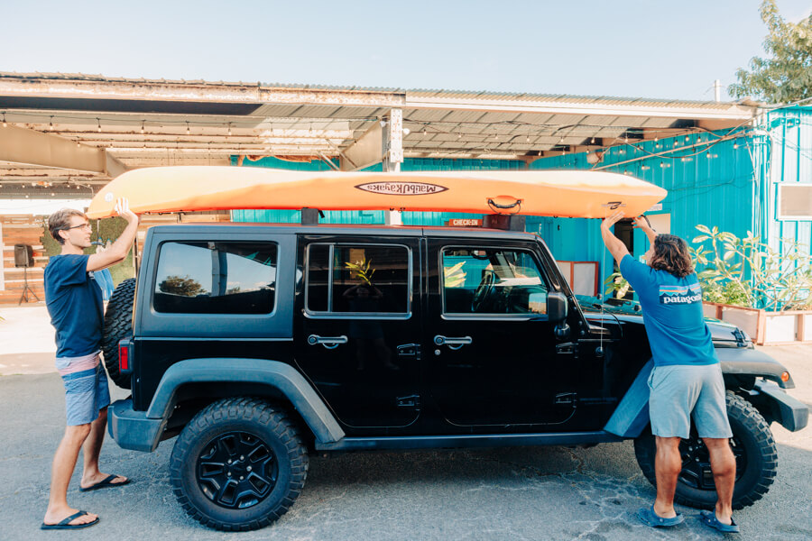

How to Transport Kayaks and SUPs From Our Shop In Kailua to the Beach
Aloha! Whether you’ve arrived on Oahu or you are planning your trip to the island, get ready to immerse yourself in breathtaking sights and create memories that will last a lifetime. There is no better way to explore Oahu’s stunning coastal waters than with a kayak or paddleboard! At Active Oahu we make it easy to embark on your adventure. From a peaceful, serene paddle along Kahana Bay to a thrilling kayak and hike journey to the summit of Chinaman’s Hat, there is something for everyone to enjoy! With our hassle-free kayak and paddleboard rental process, we ensure you spend less time worrying about the details, and more time enjoying the beauty of Oahu. Whether you are looking to rent a single kayak or paddleboard, or multiple to bring your family and friends along for the adventure, all you need to bring is a four-door vehicle and we’ll take care of the rest!
Transporting Kayaks Using Foam Pads (for 1-2 Kayaks)
If you are looking to rent one or two kayaks, we offer a quick and easy way to secure them to your vehicle using foam pads. Start by placing the foam pads on top of the vehicle. Place one foam pad towards the front of the vehicle, about a foot back from the windshield. Place the second foam pad towards the back of the vehicle, near where the back door ends or just before the rear window. The goal is to place the pads where they will provide the most support based on the vehicle’s design. Now you are ready to put the kayaks on.


To lift the kayak onto the vehicle, begin by placing the kayak upside down on the ground, parallel to the vehicle, with the front of the kayak facing the same direction as the front of the vehicle. With one person on each end of the kayak, lift the kayak bending with your knees (and lifting with your legs), to about shoulder height. Once it is shoulder height, switch your grip so that you can lift the kayak overhead and onto the vehicle.



To place the kayak on top of the foam pads, walk towards the vehicle keeping the kayak overhead. The person holding the back of the kayak will walk behind the vehicle and set their end down first. Then the person holding the front will lean over the front of the vehicle and gently place their end down. Ensure that the middle of the kayak aligns with the middle of the vehicle for even weight distribution.

If you are stacking a second kayak on top, repeat the process of lifting and placing the kayak, but this time set it down directly on top of the first kayak.
Tip: it is easier for the shorter person to lift the front of the kayak on the back side of the vehicle and the taller person to lift the back side of the kayak at the front of the vehicle. (unlike our pictures which have the taller person on the back, ha)


The final step is to secure the kayaks using two buckle straps. Begin by opening all the doors on the vehicle. One buckle strap will go through each set of doors. Holding the metal end of the buckle strap, toss the rest of the strap over the kayaks to the other side of the vehicle. Thread the strap through the interior of the vehicle. On the metal buckle, press the button to create an opening, then pull the strap through the buckle. Keep the metal buckle high above your vehicle frame as you pull it tight to avoid scratching the vehicle as you pull the strap tight. Finally, do a couple firm tugs without pressing the button to make sure the strap is secure. Now the foam pads should be a little compressed from the weight of the kayak to prevent movement. Repeat with the other buckle strap. From there, secure the rest of the strap inside the vehicle and you are ready to go!


Taking Kayaks Off of a Vehicle
When you arrive at your destination and are ready to take the kayaks off of the vehicle, simply press the button on the metal clips and loosen the straps until they come out of the opening, allowing you to remove them from the kayaks. Then with one person holding each end of the kayak, lift it overhead and walk sideways until you can set it down parallel to the vehicle. Repeat with any remaining kayaks.


Once the kayaks are off, grab the foam pads off of the vehicle and secure them inside along with the metal buckle straps until you are ready to use them again. You are now ready for your kayaking adventure!
Suction Cup Crossbar Rack for Transporting Multiple Kayaks or Paddleboards
Planning for a big group adventure and need to load multiple kayaks or paddleboards onto one vehicle? We’ve got you covered! One of the mounting options we offer is a universal suction-cup crossbar rack. This durable and secure design provides rigid support that safely transports up to four kayaks or six paddleboards on top of one vehicle. When you arrive at the shop to pick up your rentals, it’s easy to install the rack onto your vehicle. First place the set of racks on the top of the vehicle. One on the forward part of your vehicle and the other near the back end of the back door, make sure the width of the suction cups fits on your roof. Then, run the strap through the open doors of the vehicle (if it’s a van make sure the strap goes behind the sliding door support bar so the door can close) and sinch down the rack so it’s snug. You can tighten it more once the kayaks are on it. Once installed, the suction rack will stay securely attached to your vehicle until you return your rentals at the shop. When you come back, you’ll remove the rack and put it back in it’s home before you head out on your next adventure!


Transporting Kayaks and Paddleboards Using the Suction-Cup Rack
After you install the suction-cup crossbar rack onto your vehicle, the next thing you’ll need to do is get the kayaks or paddleboards on and off your vehicle when you reach your destination. For kayaks, begin by placing the kayak upside down on the ground, parallel to the vehicle, with the front of the kayak facing the same direction as the front of the vehicle. With one person on each end of the kayak, lift the kayak with your legs, not your back, get the kayak to about shoulder height. Once it is shoulder height, switch your grip to your palms so that you can lift the kayak overhead and onto the vehicle. To place the kayak on the roof rack, walk towards the vehicle keeping the kayak overhead. The person holding the back of the kayak will walk behind the vehicle and set their end down first. Then the person holding the front will lean over the front of the vehicle and gently place their end down. Ensure that the middle of the kayak aligns with the middle of the vehicle for even weight distribution. Stack additional kayaks using the same process and placing them directly on top of the first ones.

The process is similar when transporting paddleboards. Start by placing the paddleboard upside down on the ground, parallel to the vehicle, with the board facing backwards so that the fins align with the front of the vehicle. Wrap the paddleboard’s leash around the fin and secure it with the velcro. With one person on each end of the board, lift it overhead and walk sideways to the vehicle. Just like with the kayaks, the person holding the back of the paddleboard will walk behind the vehicle and set their end down first. Then the person holding the front will lean over the vehicle and gently place their end down. To stack additional paddleboards, place foam pads on top of the first board. Then repeat the lifting and placement process, ensuring each additional board is set slightly back from the front to avoid stacking directly on top of the fins.


Now that the kayaks or paddleboards are loaded onto the vehicle, all you need to do is secure them down using two buckle straps. Begin by opening all the doors on the vehicle. One buckle strap will go through each set of doors. Holding the metal end of the buckle strap, toss the rest of the strap over the kayaks or paddleboards to the other side of the vehicle. Thread the strap through the interior of the vehicle, press the button on the buckle to create an opening, and pull the strap through the buckle. Keep the metal buckle high above your vehicle frame as you pull it tight to avoid scratching the vehicle as you pull the strap tight. Finally, do a couple firm tugs without pressing the button to make sure the strap is secure. Now you are ready to transport the kayaks or paddleboards safely and securely!


Transporting Kayaks Without a Vehicle
No vehicle? No problem! Alternatively, you can opt for transporting your kayak rental with our e-bikes equipped with kayak trailers. This option provides extra fun and convenience, with no need to battle for parking at the popular beaches. You can park at our shop or use rideshare services or the city bus, and when you arrive at our shop we have everything you need to have an unforgettable day cruising through town and out on the water.